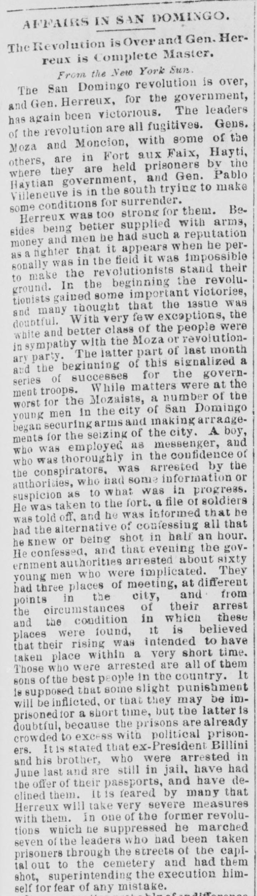

Affairs in San Domingo.Asuntos de Santo Domingo.
Savannah Morning News. Savannah, October 27, 1886. Page 3. Published by [J.H. Estill?]. A daily newspaper, 1868–1887.Savannah Morning News. Savannah, 27 de octubre de 1886. Página 3. Publicado por [J.H. Estill?]. Periódico diario, 1868–1887. View the originalVer el original

The Savannah morning news reported on October 27, 1886, that Americans in Santo Domingo likely favored Gen. Herreux because he had maintained peace on the island for over six years. Although fighting was confined to the interior, the disturbances harmed American-owned sugar estates by halting labor, delaying crops, and threatening increased export taxes to pay for the revolution. Additionally, the article described Gen. Herreux as a 40-year-old negro of reported Haytian origin with a slightly Jewish cast of features, whose early life was obscure until recognized by Gen. Luperon.El Savannah morning news consignó el 27 de octubre de 1886 que los estadounidenses afincados en Santo Domingo se inclinaban probablemente por el general Heureaux merced a que garantizó la tranquilidad en la isla a lo largo de más de seis años. Aun cuando las refriegas se concentraban en el interior, los disturbios perjudicaban a los ingenios azucareros de propiedad norteamericana al paralizar las faenas, retrasar las zafras y amenazar con mayores arbitrios de salida para sufragar la pacificación. Añadía el artículo una semblanza del general Heureaux como un hombre negro de 40 años, de presumible origen haitiano y fisonomía semítica, cuya juventud transcurrió en la oscuridad hasta ser promovido por el general Luperón.
FULL TEXT:TEXTO COMPLETO:
Savannah Morning News October 27, 188627 de octubre de 1886
AFFAIRS IN SAN DOMINGO.ASUNTOS EN SANTO DOMINGO.
The Revolution is Over and Gen. Herreux is Complete Master.La revolución ha terminado y el general Herreux es dueño completo de la situación.
From the New York Sun. The San Domingo revolution is over, and Gen. Herreux, for the government, has again been victorious. The leaders of the revolution are all fugitives. Gens. Moza and Moncion, with some of the others, are in Fort aux Paix, Hayti, where they are held prisoners by the Haytian government, and Gen. Pablo Villeneuve is in the south trying to make some conditions for surrender.Del New York Sun. La revolución de Santo Domingo ha terminado, y el general Herreux, por el gobierno, ha salido victorioso de nuevo. Los líderes de la revolución son todos fugitivos. Los generales Moza y Moncion, con algunos de los otros, están en Fort aux Paix, Haití, donde son mantenidos prisioneros por el gobierno haitiano, y el general Pablo Villeneuve está en el sur tratando de hacer algunas condiciones para la rendición.
Herreux was too strong for them. Besides being better supplied with arms, money and men, he had such a reputation as a fighter that it appears that when he personally was in the field it was impossible to make the revolutionists stand their ground. In one of the former revolutions which he suppressed he marched seven of the leaders who had been taken prisoners through the streets of the capital out to the cemetery and had them shot, superintending the execution himself for fear of any mistake.Herreux era demasiado fuerte para ellos. Además de estar mejor provisto de armas, dinero y hombres, tenía tal reputación como luchador que parece que cuando él personalmente estaba en el campo era imposible hacer que los revolucionarios mantuvieran su terreno. En una de las revoluciones anteriores que suprimió hizo marchar a siete de los líderes que habían sido tomados prisioneros por las calles de la capital hasta el cementerio y los hizo fusilar, supervisando él mismo la ejecución por temor a algún error.